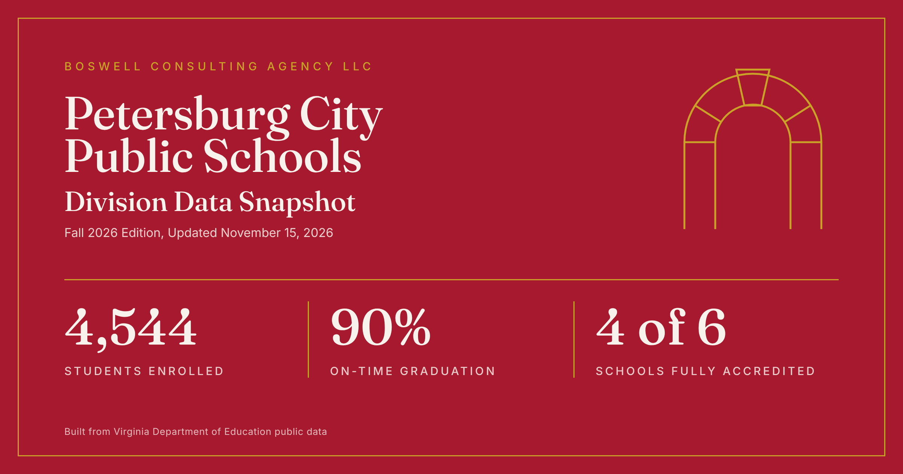

The division against Virginia
Standards of Learning pass rates for all students, 2025-26. Petersburg trails the state by roughly 30 points in every tested subject, while its three-year trend is moving up in math and science.
Reading
31 points below VirginiaMath
33 points below VirginiaScience
30 points below VirginiaHow to read this: the division rate blends grades 3 to 8 tests with high school end-of-course tests, exactly as VDOE publishes it on the division profile. The gap is the story; the trend table beside it shows whether the gap is closing.
Three-year trend, Petersburg
SOL pass rates, percent passed.
| Subject | 2023-24 | 2024-25 | 2025-26 | Change |
|---|---|---|---|---|
| Reading | 43 | 42 | 43 | Flat |
| Math | 35 | 37 | 40 | +5 pts |
| Science | 38 | 39 | 41 | +3 pts |
Math has gained in both years. Reading has not moved in three years, which makes it the division's standing problem rather than a one-year dip.
The longer view sharpens that. In 2022-23 the division passed 45% in reading, 37% in math, and 33% in science (Virginia: 73%, 69%, 67%), and in 2021-22 it passed 46%, 31%, and 33% (contemporaneous reporting of the VDOE profile release). Reading sits two points below where it stood four years ago, while science sits eight points above it. No pre-pandemic baseline is claimed: 2018-19 pass rates could not be verified against a VDOE source for this edition, so the comparison starts in 2021-22 rather than guessing at the last pre-COVID year.
Share of students absent 10% or more of the school year. Petersburg's rate is 20.0 points above the Virginia rate of 12.9%.
The direction is right: down from 37.8% in 2024-25 and 38.8% in 2023-24. At the current pace the division stays well above the state rate for years, so attendance remains a first-order finding, not a footnote.
Four-year cohort graduation. Virginia graduated 93.5% on time, so Petersburg sits 3.5 points below the state, with a 6% cohort dropout rate against 4.7% statewide.
Graduation is the division's closest measure to the state line. The cohort was 291 students, with 263 graduates. Because Petersburg High is the only high school, the school and division figures are the same.
The 90% is a jump, not a plateau: the on-time rate was 86.2% for both the Class of 2024 and the Class of 2025 (Virginia: 92.9% and 92.7%). Inside the Class of 2026, 80 students earned Advanced Studies diplomas, 27.5% of the cohort against 50.9% statewide; 173 earned Standard diplomas and 10 other diplomas; 16 students dropped out and 11 left as other non-graduates, for a completion rate of 91%. After graduation is the weaker half: the most recent postsecondary figures VDOE publishes (the cohort that entered high school in 2019) show 45% of Petersburg graduates enrolled in a two or four year college within 16 months, against 64% statewide.
Accreditation, fall 2026 release
Virginia accredits schools, not divisions, so there is no single division rating. The accurate picture is school by school: 4 of 6 fully accredited, 2 conditionally accredited. Designations are in effect for 2026-27 and are calculated from 2025-26 data.
- Petersburg High SchoolFully Accredited
- Cool Spring ElementaryFully Accredited
- Walnut Hill ElementaryFully Accredited
- Pleasants Lane ElementaryFully Accredited
- Lakemont ElementaryConditionally Accredited
- Vernon Johns Middle SchoolConditionally Accredited
The people in the building: teacher quality, 2025-26
Every measure above describes students. This one describes the adults in front of them, from the federal educator equity tables VDOE publishes on the same profiles. Petersburg's students are far more likely than Virginia's to be taught by a teacher working outside their field or in their first years.
| Measure | Petersburg City | Virginia |
|---|---|---|
| Teachers teaching out of field | 34.1% (116 teachers) | 7.4% |
| Inexperienced teachers | 18.2% (62) | 5.4% |
| Both out of field and inexperienced | 15% (51) | 1.7% |
| Provisionally licensed teachers | 22.6% (77) | 8.8% |
Reading this table: one in three Petersburg teachers teaches a subject or grade level outside their licensed field, more than four times the state rate, and more than double the rate in Virginia's high-poverty schools as a group (13%). One in seven teaches out of field while also inexperienced. The leadership bench is steadier than the teaching bench: no Petersburg principal is in a first year (Virginia: 1.7%), and one assistant principal divisionwide is. Class sizes are not the constraint on paper: the student-teacher ratio is 16.65 to 1 in grades K to 7 and 9.42 to 1 in grades 8 to 12 (2024-25). One further credential note: 19% of Petersburg teachers report a highest credential in the profile's "Other" category, below a bachelor's degree or not classified (2025-26). Section 5 carries the same measures school by school.
Source: Virginia Department of Education, School Quality Profiles, Teacher Quality tables (titled 2025-2026), Petersburg City division and Virginia state profiles; student-teacher ratio and educational attainment tables, same profiles. Retrieved November 15, 2026.
Enrollment: fall membership
Students enrolled on September 30 of each school year, as VDOE counts them.
| School year | Fall membership | Of which pre-kindergarten |
|---|---|---|
| 2022-23 | 4,272 | Not tabled |
| 2023-24 | 4,464 | 405 |
| 2024-25 | 4,582 | 418 |
| 2025-26 | 4,544 | 437 |
Reading this table: the division is not shrinking. Membership rose by 310 students into 2024-25 and eased by 38 in 2025-26, and pre-kindergarten grew every year. The six rated schools enroll 4,107 of the 4,544; the remaining 437 are Westview pre-kindergarten students. The results on this page are not a story of a division losing its students. For 2021-22, the division itself reported 4,248 total students in a May 2022 board presentation; the VDOE fall membership file for that year could not be verified for this edition, so the series starts with the first VDOE-sourced year.
Source: Virginia Department of Education, School Quality Profiles, Petersburg City division profile, Fall Membership by Grade table; 2022-23 from VDOE, Utilization of Private Day Special Education Placements, 2022-2023. Retrieved November 15, 2026.
Results by student group
A division average hides where the work is. VDOE publishes pass rates by student group on the same division profile; this is the 2025-26 picture with the average taken apart.
| Student group | Reading | Math | Science |
|---|---|---|---|
| All students | 43 | 40 | 41 |
| Black | 42 | 38 | 39 |
| Hispanic | 44 | 43 | 47 |
| White | 64 | 55 | 53 |
| Multiple Races | 52 | 60 | 50 |
| Economically Disadvantaged | 40 | 37 | 38 |
| Not Economically Disadvantaged | 50 | 46 | 49 |
| Students with Disabilities | 28 | 24 | 24 |
| Students without Disabilities | 45 | 42 | 44 |
| English Learners | 27 | 40 | 26 |
| Homeless | 34 | 27 | 25 |
Percent of students passing, 2025-26. Groups that rest on very small numbers of tested students are published by VDOE but are not tabled here, because a handful of students swings those rates. Foster care results are suppressed by VDOE at every level. Suppressed counts are never estimated.
Reading pass rate by student group, pictured
The gold tick on every bar marks the all-students rate, 43%. Bars to the right of the tick beat the division average; bars to the left trail it.
Same figures as the table above, sorted high to low. The two groups furthest below the line, students with disabilities and English learners, are also the two groups whose progress measures the state tracks most closely, which is why they get their own panels elsewhere on this page.
The widest gap runs on disability status
- Reading, with vs. without disabilities28% vs. 45%
- Math24% vs. 42%
- Science24% vs. 44%
The gap is 17 to 20 points in every subject, so it is a standing condition of the division's results, not a one-test artifact. Any honest improvement plan for this division runs through special education outcomes first.
School by school, the floor of that gap sits at Cool Spring Elementary, where students with disabilities passed reading and math at 6% each in 2025-26, the lowest published cells in the division. Section 5 now carries the full group table on every school panel.
Findings that cut the other way
- English learners, math pass rate40%, equal to all students
- Graduation, students with disabilities100% (39 of 39)
- Graduation, English learners100% (15 of 15)
- Graduation, Black students91%
- Graduation, homeless students76% (16 of 21)
The high school finishes the students it gets, including every senior with a disability and every English learner senior in the Class of 2026. The exception is homeless students, who post pass rates near the bottom in every subject (34% reading, 27% math, 25% science) and a 10% cohort dropout rate.
The English learner story splits by school. At Walnut Hill, English learners passed reading at 60% and math at 90% in 2025-26, the strongest group results in the division. At Vernon Johns Middle School, the same population passed at 15% in reading, 19% in math, and 12% in science, the weakest. Same division, same program rules, opposite ends.
English learner progress, against the state target
The state annual target is 58%. Petersburg's English learners making progress: 120 of 297. Only 3% attained proficiency in the year (13 of 387).
- Walnut Hill Elementary56%
- Cool Spring Elementary46%
- Lakemont Elementary46%
- Pleasants Lane Elementary42%
- Petersburg High School41%
- Vernon Johns Middle School28%
Every school sits below the target, and the middle school sits furthest below it, at half the target rate. This measure also feeds each school's state performance score, so it is a lever, not a side statistic.
Attendance, by group
More than half of the division's homeless students missed 10% or more of the school year, the heaviest split of any published group. The division overall: 1,298 of 3,945 students. Students with disabilities: 171 of 453. English learners post the lightest split of the large groups, 105 of 459.
Counts are as VDOE publishes them in the division profile's absenteeism by subgroup table. Attendance work aimed at homeless students is the single highest-yield attendance move in this division's data.
The earliest signals: third grade reading and kindergarten readiness
Everything else on this page is a lagging measure, results after the fact. These two point the other way. Third grade reading is where the division's reading stall begins, and in 2025-26 it moved the wrong way.
| Grade 3 reading, percent passed | 2023-24 | 2024-25 | 2025-26 |
|---|---|---|---|
| Petersburg City, division | 40 | 39 | 34 |
| Cool Spring Elementary | 34 | 37 | 24 |
| Lakemont Elementary | 28 | 30 | 22 |
| Pleasants Lane Elementary | 47 | 35 | 36 |
| Walnut Hill Elementary | 49 | 50 | 51 |
| Virginia | 67 | 67 | 68 |
Reading this table: the division's third graders fell five points in one year, to 34%, while Virginia held at 68%. Two thirds of Petersburg's eight and nine year olds are not yet reading at grade level at the point where reading becomes the tool every other subject uses. The spread inside the division is 29 points: Walnut Hill, at 51% and rising, teaches the same grade in the same city as Lakemont at 22%. Before third grade, the entry measure points the same direction: 45.23% of Petersburg kindergartners met the overall readiness benchmark in fall 2023, the most recent division figure published (Virginia Kindergarten Readiness Program). The statewide figure for fall 2025 is 57%. Most Petersburg children start school behind the benchmark, and the third grade table shows the gap compounding rather than closing.
Sources: Virginia Department of Education, School Quality Profiles, Grade 3 English Reading Performance tables (division, school, and state profiles), retrieved November 15, 2026. Kindergarten readiness: Petersburg Early Childhood Care and Education System data snapshot, Virginia Early Childhood Foundation / Thrive Birth to Five (updated April 16, 2025), reporting Virginia Kindergarten Readiness Program aggregate division data provided by VDOE; statewide fall 2025 figure from the VKRP public reporting.
Source: Virginia Department of Education, School Quality Profiles, Petersburg City division profile: test results by student group, English Learner Progress and Proficiency, absenteeism by subgroup, and Class of 2026 cohort tables, 2025-26. Retrieved November 15, 2026.
The road to full accreditation, measured
Since September 2024, Virginia runs accreditation and performance as two separate systems. Accreditation is a compliance designation. Performance is the School Performance and Support Framework, a 100-point score, and the line that matters is 80 points: Meets Expectations. VDOE reports 99.7% of Virginia schools fully accredited in the fall 2026 release. Petersburg holds two of the exceptions, and both are also federally identified for Comprehensive Support and Improvement. This is exactly how far each one sits from the line, and what its score is made of.
A school within half a point of a band edge receives the higher designation. A federal Targeted Support identification lowers a school's displayed category by one level, which is why Walnut Hill Elementary shows 75.71 points with a Needs Intensive Support level in Section 1.
Lakemont Elementary
10.96 points to Meets ExpectationsFramework score 69.04 of 100, Approaching Expectations. Conditionally Accredited, and federally identified for Comprehensive Support and Improvement.
- Mastery index, reading / math / science70.02 / 66.02 / 81.91
- Growth index, reading / math76.73 / 72.77
- English learner growth index, reading / math92.85 / 82.14
- Mastery index, students with disabilities, reading / math51.31 / 46.05
- Chronic absenteeism (the readiness input)30.05%
How to read this school: growth is not its problem. Growth is its strongest component, and its English learners post the highest growth indexes in the building. The drag is the level students start from, mastery at two thirds of its points, disability outcomes running well below the schoolwide mastery mark, and nearly one in three students chronically absent. Under the accreditation benchmarks Virginia repealed in 2024, a 30.05% absenteeism rate would have sat in the lowest level on that indicator; the current system folds it into readiness points instead.
The second gap has no published number. As a Comprehensive Support school, Lakemont's route back to Fully Accredited also runs through the state regulation (8VAC20-132-300): satisfactory compliance evidence, plus demonstrating the school is no longer among the lowest-performing 5 percent of schools statewide. VDOE does not publish the score at that cutoff, so no honest figure exists for that distance. Anyone who quotes one is guessing.
Vernon Johns Middle School
12.74 points to Meets ExpectationsFramework score 67.26 of 100, Approaching Expectations. Conditionally Accredited, and federally identified for Comprehensive Support and Improvement. The larger of the division's two gaps.
Mastery 60 points, Growth 20 points, Readiness 20 points (chronic absenteeism plus advanced coursework). Elementary schools are weighted Mastery 65, Growth 25, Readiness 10.
- SOL pass rates, reading / math / science37 / 31 / 36
- Division averages, same subjects43 / 40 / 41
- Chronic absenteeism34.0%
- English learner progress28% (target 58%)
- Reading pass rate, English learners15%
- Math pass rate, students with disabilities18%
How to read this school: every published input sits on the wrong side of the division average, in the division's only middle school, covering both the main site and the grade 6 academy at Blandford. Math at 31% is the lowest math figure in the division, one in three students is chronically absent, and English learner progress runs at half the state target. There is no single broken indicator here; the score is what across-the-board inputs produce.
These two schools are the whole distance between Petersburg and its MOU exit condition in Section 7. When either one's designation changes, the exit tracker changes with it.
Sources: Virginia Department of Education, School Quality Profiles, Petersburg City division summary table (scores and designations, fall 2026 release); VDOE School Summary Report 2026, Lakemont Elementary (component detail); VDOE School Performance and Support Framework overview (performance bands); 8VAC20-132-300 (accreditation rules); VDOE Education Update, October 8, 2026 (99.7% statewide). Data current as of the fall 2026 releases; retrieved November 15, 2026.
How Petersburg compares with its peers
The same published measures for four comparable Virginia divisions and the state, 2025-26. Richmond City is the only other division that still meets the Board of Education's MOU criteria.
| Division | Students | Reading | Math | Science | Absent 10%+ | Graduation | Fully accredited |
|---|---|---|---|---|---|---|---|
| Petersburg City | 4,544 | 43 | 40 | 41 | 32.9% | 90% | 4 of 6 |
| Richmond City | 21,554 | 54 | 51 | 50 | 21.1% | 85% | 43 of 43 |
| Hopewell City | 3,835 | 55 | 52 | 54 | 18.3% | 84% | 5 of 5 |
| Danville City | 5,473 | 61 | 59 | 50 | 9.6% | 86% | 10 of 11 |
| Newport News City | 25,367 | 64 | 63 | 60 | 16.6% | 98% | 37 of 37 |
| Virginia | 1,246,544 | 74 | 73 | 71 | 12.9% | 93.5% | n/a |
Reading the table: Petersburg posts the lowest pass rates and the highest chronic absenteeism in this group, and two of its six schools are conditionally accredited, the largest share here. Two notes on oversight: Richmond's schools are all fully accredited and it still meets the MOU criteria, because those criteria run on federal support identifications, a system separate from accreditation. Danville City sat under an MOU until the Board of Education released it in June 2026.
Pass rates are percent of students passing, all students, 2025-26. Graduation is the Class of 2026 on-time rate as published. Accredited counts are the schools listed in each division's VDOE profile, fall 2026 release.
What each division spends per pupil
Per-pupil expenditures for operations, fiscal year 2025 (school year 2024-25), as VDOE publishes them. The four sources are shown as printed; the state sales tax is a state-collected source VDOE reports on its own line.
| Division | Total per pupil | Local | State | State sales tax | Federal |
|---|---|---|---|---|---|
| Petersburg City | $18,080 | $2,413 | $10,721 | $1,264 | $3,682 |
| Richmond City | $24,078 | $12,057 | $6,863 | $1,489 | $3,670 |
| Hopewell City | $17,493 | $2,837 | $10,955 | $1,306 | $2,395 |
| Danville City | $23,002 | $6,504 | $11,688 | $1,536 | $3,274 |
| Newport News City | $18,612 | $5,762 | $9,060 | $1,426 | $2,364 |
| Virginia | $18,771 | $9,297 | $6,672 | $1,419 | $1,383 |
Reading the money: Petersburg spends $691 less per pupil than the state average, and the gap is local money. Petersburg raises $2,413 per pupil locally, against a statewide average of $9,297 and $12,057 in Richmond. State support does the equalizing: Petersburg's $10,721 per pupil in state funds runs far above the statewide average state share of $6,672. Danville, the division that just left its MOU, spends $23,002 per pupil, second in this group only to Richmond.
Operations spending only: the table covers regular day school, food services, summer school, adult education, and pre-kindergarten, and excludes debt service and capital outlay. Per-pupil figures divide by end-of-year average daily membership (Petersburg: 4,501 students), not the fall membership of 4,544 used elsewhere on this page.
Source: Virginia Department of Education, Superintendent's Annual Report, Table 15 (sources of financial support and per-pupil expenditures for operations), fiscal year 2025 final. Retrieved November 15, 2026.
Explore by school
Select any school to see its full panel: enrollment, SOL pass rates against the division average, chronic absenteeism, accreditation, and its School Performance and Support Framework result. All figures are 2025-26 unless noted.
Petersburg High School
Gold marker shows the division average for that subject (Reading 43, Math 40, Science 41), so each bar reads against the division as well as the scale.
Westview Early Childhood Education Center serves pre-K and Head Start only and has no VDOE profile; its 437 students are inside the division total of 4,544. The six profiled schools sum to 4,107 students, and 4,107 plus 437 pre-K equals the division total.
Compare two schools
Chronic absenteeism: three years, school by school
Share of students absent 10 percent or more of the school year. The division rate has fallen two years running, and the largest drops came at the high school and the middle school. It remains about two and a half times the state rate.
The trend, pictured
Petersburg City Virginia. Share of students absent 10% or more of the year.
Both lines fall, and Petersburg's falls faster, down 5.9 points in two years against Virginia's 2.8. The gap between the lines is the finding: at the current pace the division stays well above the state rate for years. Same figures as the table below.
| School | 2023-24 | 2024-25 | 2025-26 | Change, 2 yrs |
|---|---|---|---|---|
| Petersburg High School | 46.6% | 46.5% | 38.6% | -8.0 pts |
| Vernon Johns Middle School | 39.8% | 42.4% | 34.0% | -5.8 pts |
| Pleasants Lane Elementary | 45.7% | 44.2% | 36.1% | -9.6 pts |
| Lakemont Elementary | 33.4% | 29.1% | 30.1% | -3.3 pts |
| Cool Spring Elementary | 27.3% | 25.9% | 25.3% | -2.0 pts |
| Walnut Hill Elementary | 29.8% | 24.4% | 24.9% | -4.9 pts |
| Petersburg City, division | 38.8% | 37.8% | 32.9% | -5.9 pts |
| Virginia | 15.7% | 14.7% | 12.9% | -2.8 pts |
Four of the six schools improved in 2025-26. Lakemont (29.1% to 30.1%) and Walnut Hill (24.4% to 24.9%) ticked up slightly. Rates are computed from the student counts VDOE publishes in each profile and match the profile charts.
Discipline, as the state records it
Attendance is half of the school environment picture. The other half is behavior and how schools respond to it, from VDOE's Student Behavior and Administrative Response (SBAR) collection, published on the same division profile. SBAR counts events and responses, not unique students: one event can carry several behaviors, and one student can receive more than one response.
| Behavior events by category | 2023-24 | 2024-25 | 2025-26 |
|---|---|---|---|
| Behaviors of a safety concern | 741 | 1,058 | 435 |
| Relationship behaviors without physical harm | 295 | 463 | 206 |
| Behaviors related to school operations | 284 | 542 | 185 |
| Behaviors that endanger health, safety, or welfare | 157 | 229 | 142 |
| Behaviors that impede academic progress | 130 | 85 | 108 |
| All categories, summed | 1,607 | 2,377 | 1,076 |
| Students receiving each response | 2023-24 | 2024-25 | 2025-26 |
|---|---|---|---|
| Out-of-school suspension | 1,442 | 2,058 | 531 |
| In-school suspension | 204 | 155 | 113 |
| Bus suspension | 80 | 70 | 47 |
| Expulsion and alternative placement | 22 | 15 | 0 |
| Referral to law enforcement | 11 | 5 | 2 |
Reading these tables: as published, recorded behavior events fell by more than half in 2025-26, and the count of students receiving an out-of-school suspension fell from 2,058 to 531. The published tables do not say whether that movement reflects student behavior, school practice, or reporting, and this snapshot does not guess at the cause. What is checkable is the size of the change, and it is the largest single-year movement in any table on this page, which makes it the first thing a follow-up edition should test against the next release.
Source: Virginia Department of Education, School Quality Profiles, Petersburg City division profile, School Environment tables (SBAR). Retrieved November 15, 2026.
State oversight status
Why these numbers carry deadlines: the division reports under a state oversight agreement, and its published exit condition is written in terms of the accreditation results above.
Memorandum of Understanding with the Virginia Board of Education
Petersburg City Public Schools operates under a Memorandum of Understanding with the Virginia Board of Education, in place since 2004 and last updated April 28, 2016. The division's data, accountability reporting, and state submissions run on that agreement's schedule whether or not any given seat in the division office is filled.
Petersburg is one of only two Virginia divisions still under an MOU. The Board of Education released Danville City, Greensville County, and Prince Edward County on June 25, 2026, and no Board action through October 2026 changed Petersburg's or Richmond City's status. Franklin City was told in April 2026 that it will be required to enter an MOU; no executed agreement for Franklin appears in VDOE's published record.
The road out, measured: how Danville left its MOU
Danville City is the most recent division to walk the road Petersburg is on. Its MOU was enacted June 18, 2020, after a 2019 division-level academic review; in 2017-18, seven of its schools had been denied accreditation. What the climb looked like in the published record:
| Ratings year | Fully accredited | Accredited with conditions / conditional | Denied | Chronically absent |
|---|---|---|---|---|
| 2023-24 | 3 of 11 | 8 | 0 | 17.2% (911 of 5,305) |
| 2024-25 | 5 of 11 | 6 | 0 | 11.7% (613 of 5,231) |
| 2025-26 | 10 of 10 rated | 0 | 0 | 9.6% (484 of 5,036) |
| Fall 2026, after release | 10 of 11 | 1 (R.I.S.E. Academy) | 0 | same 2025-26 data |
Underneath the designations, Danville's reading pass rate rose every year, 53 to 57 to 61, and math rose 49 to 54 to 59, while chronic absenteeism fell by more than half. The 2025-26 ratings year was its first with every rated school fully accredited in more than a decade.
Two different exit tests, and the difference matters. Danville's MOU, like Petersburg's, was written to end when every school had been accredited without conditions for two consecutive years. Danville never met that clause under the old system; its best year was 5 of 11. The Board released it anyway, unanimously, on June 25, 2026, and both the division and its newspaper describe the release as early. The release rested on the current rules: since Virginia split accreditation from performance in September 2024, the operative question under 8VAC20-132-300 is whether a division still meets the criteria that trigger an MOU at all, which turn on federal support identifications (more than 40 percent of a division's schools identified for comprehensive or additional targeted support, or 10 or more schools in comprehensive support). On the 2024-25 results the Board used, Danville no longer met those criteria, and every rated Danville school held full accreditation for 2025-26. The same Board item records that Petersburg City and Richmond City still met the criteria.
Petersburg on the same measure, today: four of Petersburg's six schools carry a Comprehensive Support and Improvement identification (Cool Spring, Lakemont, Pleasants Lane, and Vernon Johns), one carries a Targeted Support identification (Walnut Hill), and one is not identified (Petersburg High). Four of six in comprehensive support alone is two thirds of the division, above the 40 percent trigger before any targeted identification is counted, and that is before the two conditional accreditations enter the picture. Danville's exit took six years, a climb from 3 of 11 to a clean sweep, and a rule change. Petersburg's distance on the same road is measurable, and it is the distance Sections 1 to 6 document.
Sources: Virginia Board of Education, Agenda Item L, April 23, 2026 (MOU enactment dates, exit criteria, 2025-26 summaries, and the statement that Petersburg and Richmond City still met the criteria on 2024-25 results); Board minutes, June 25, 2026 (unanimous release); VDOE School Quality Profiles, Danville City division (ratings, pass rates, absenteeism counts); WBTM, September 8, 2023 (2023-24 ratings); Danville Register & Bee, October 4, 2024 (2024-25 ratings; 2017-18 denials) and June 27, 2026 (release described as early); Danville Public Schools releases, June 2026 and October 7, 2026. Federal identification for Petersburg schools: each school's VDOE profile, ESSA reporting tab, retrieved November 15, 2026.
Three divisions left on June 25, 2026
Danville was one of three releases the Board granted the same day. Measured side by side, the three exits share a shape, and it is not the shape the written clauses predicted.
| Division | MOU from | Schools | 2025-26 ratings | Fall 2026 ratings | Chronically absent, 2023-24 to 2025-26 | Written exit clause |
|---|---|---|---|---|---|---|
| Danville City | 2020 | 11 | 10 of 10 rated, fully accredited | 10 of 11 fully, 1 conditional | 17.2% to 9.6% | Not met; released on the current criteria |
| Greensville County | 2018 | 3 | 3 of 3 fully accredited | 3 of 3 fully accredited | 21.5% to 17.4% | Met on its own terms |
| Prince Edward County | 2020 | 3 | 3 of 3 fully accredited | 3 of 3 fully accredited | 20.6% to 21.1% | Not met; released on the current criteria |
Greensville County entered its MOU in 2018, after a 2016 division-level review, under a clause that kept it in place until all schools were accredited. In fall 2025 all three of its schools were, and the division carried no federal identifications at all that year, the only one of the three to meet its written clause and the current test at the same time. Its results were higher and flatter than Danville's climb (reading 62, 65, 63; math 70, 67, 67), its Class of 2026 graduated 93% on time, and its absenteeism fell once, then plateaued at 17.4%.
Prince Edward County is the case that isolates what an exit actually turns on. The division asked for its own review: its superintendent requested one in September 2019, and the onsite review followed that December. Its low point came in 2023-24, when all three of its schools held accreditation with conditions. By 2025-26 all three were fully accredited, and its comprehensive support share had fallen to 1 of 3 schools (33%), under the 40% trigger. Its chronic absenteeism never moved at all, about one student in five in all three years (20.6%, 20.4%, 21.1%). The exit rested on accreditation and identification share, not attendance.
Reading the three together: every released division posted an all-fully-accredited year in 2025-26, the first ratings year under the new system. Two of the three exited without satisfying the clause their MOU was written with, because the operative test had changed in 2024. Attendance was not the common thread: Danville halved it, Greensville cut it by a fifth, Prince Edward's did not move. The common thread was a clean accreditation sweep with an identification share under the trigger.
Sources: Virginia Board of Education, Agenda Item L, April 23, 2026 (enactment dates and exit clauses for all three divisions; 2025-26 summaries) and Board minutes, May 7, 2020 and June 25, 2026; VDOE news release and division releases, June 25, 2026; Greensville County Public Schools release, October 8, 2026, and CAP Update, March 2024; VDOE School Quality Profiles, Greensville County and Prince Edward County divisions (pass rates, absenteeism counts, fall 2026 ratings); VDOE School Accreditation Report files via the Virginia Open Data Portal (Prince Edward historical counts). Greensville's accreditation counts for 2022-23 through 2024-25 are not published in the record retrieved and are not stated here.
Petersburg's exit tracker: both tests, measured
The June 2026 releases show two tests now decide an exit: the clause written in the MOU, and the current criteria in 8VAC20-132-300. Petersburg's standing on each, on fall 2026 published figures:
| Measure | Petersburg today | The exit line |
|---|---|---|
| Schools fully accredited (written clause) | 4 of 6 | 6 of 6 |
| Conditionally accredited schools | Lakemont Elementary (69.04 points, 10.96 from Meets Expectations) and Vernon Johns Middle School (67.26 points, 12.74 from Meets) | None |
| Schools in comprehensive support, CSI (current criteria) | 4 of 6 (67%) | The MOU criteria trip when more than 40% of schools are identified for comprehensive or additional targeted support, or at 10 or more CSI schools |
| Schools with any federal identification | 5 of 6 (83%) | At or below 40% identified to clear the current test |
Reading this tracker: both tests run through the same schools. Lakemont and Vernon Johns sit on both lists, conditionally accredited and in comprehensive support at once, so their framework scores are the division's leading exit indicator. Cool Spring and Pleasants Lane show the other route: both are fully accredited and still carry CSI identifications, and a school leaving comprehensive support there moves the current test without changing accreditation at all, the pattern Richmond used to exit six CSI schools in one year. Next measurement points: the Board of Education meets December 2-3, 2026, and the next ratings arrive with the fall 2027 release. Edition 2 of this snapshot will re-measure this table.
Next in line: Franklin City
In April 2026 the Board of Education recorded that Franklin City will also be required to undergo a division-level academic review and enter a Memorandum of Understanding. No executed Franklin agreement appears in VDOE's published record through November 2026, so Franklin's status is tracked here as pending, not entered. Its fall 2026 profile shows the shape of the case: S.P. Morton Elementary is conditionally accredited, and Franklin High School carries the framework's lowest displayed category, Needs Intensive Support.
What the full Fall Accountability Reporting Pack adds
This snapshot shows the pack's format and its public data layer. The three items below are part of the paid pack itself and are not shown on this page.
Findings memo, mapped to the accountable office
Each major gap in the data, the reading stall, the absenteeism rate, the two conditional accreditations, written up as a finding and mapped to the office responsible for it, so leadership can assign the work instead of debating the numbers.
Full MOU metrics compilation
The division's Memorandum of Understanding metrics compiled against their targets in one place, cycle by cycle, in the form the state reporting expects, ready for review before each submission.
Priority actions for the next deadline
A short, ordered actions page tied to the next reporting deadline: what has to move first, what it depends on, and what evidence will show it moved.
How this was built
Built by Dr. Devon Boswell, DBA, Boswell Consulting Agency LLC. A DBA is a professional doctorate, earned for work inside live operations: noticing where an operation's issues actually sit, and building the fix within the operation's reach. This snapshot is an example, a tool built from the division's public VDOE data that can be rerun each reporting cycle. It runs on public data only, so nothing here required division systems or student records.
How to read this snapshot
Every term on this page, defined the way the source defines it. Where a definition belongs to VDOE or to federal reporting, that is stated rather than paraphrased into a new meaning.
- PassedThe share of tested students scoring Proficient or Advanced on Virginia's Standards of Learning tests in that subject and year.
- Chronic absenteeismThe share of students absent 10% or more of the school year. Where a profile publishes counts instead of a rate, the rate here is computed from those counts, and the counts are shown with it.
- AccreditationA compliance designation under 8VAC20-132, judged on 11 evidence areas. Since September 25, 2024 it is separate from performance. Schools are Fully Accredited or Conditionally Accredited; Virginia does not rate divisions.
- The 100-point scoreThe School Performance and Support Framework score. It combines mastery, growth, and readiness measures, with weights that differ by school level (Section 3 shows each conditional school's own model). Bands: Distinguished 90 and above, Meets Expectations 80 to 89, Approaching Expectations 65 to 79, Needs Intensive Support below 65. A score within half a point of a band edge earns the higher designation, and a federal targeted identification lowers the displayed category one level.
- CSI, TSI, ATSIFederal identifications under the Every Student Succeeds Act. Comprehensive Support and Improvement (CSI) covers the lowest-performing schools statewide. Targeted Support and Improvement (TSI), and its additional form ATSI, cover schools where a student group performs at that same low level even when the school as a whole does not.
- Out of field, inexperienced, provisionally licensedFrom the federal educator equity tables VDOE publishes on each profile: teaching outside the subject or grade level of one's license; early-career status as federal reporting defines it; and teaching on a provisional license rather than a full one.
- Suppressed resultsWhen a group is small enough that publishing its result could identify a student, VDOE replaces the figure with a marker. This page shows a dash in those cells and never estimates what sits behind one.
- Per-pupil spendingVDOE Superintendent's Annual Report, Table 15: expenditures for operations only, excluding debt service and capital outlay, divided by end-of-year average daily membership.
- EditionsFigures are as published on the retrieval dates recorded in the Editions section. If VDOE revises a profile, the change is recorded in the next edition rather than silently replaced.
Editions, changes, and downloads
This snapshot is a recurring instrument. Each release is an edition, listed here with what changed, and every table on the page can be downloaded as a data file.
Fall 2026 edition (Edition 1)
Published November 14, 2026. Updated November 15, 2026.
What changed in the November 15 update: results by student group with English learner progress against the state target; measured gap panels for the two conditionally accredited schools; the statewide fall 2026 context and the current MOU division list; per-pupil spending for Petersburg and its peers; the full federal identification map for all six schools; Danville's measured path out of its MOU; teacher quality for the division and every school; a three-year trend on every school panel; the earliest signals (third grade reading and kindergarten readiness); a designed cover; and the data downloads below. A second November 15 update added the complete exit picture: the Greensville County and Prince Edward County exit paths beside Danville's, a Petersburg exit tracker measured against both the written clause and the Board's current criteria, the Franklin City panel, test results by student group on every school panel, graduation detail for the Class of 2026, a side-by-side school comparison tool, a definitions and methods section, the enrollment trend, the longer pass-rate view back to 2021-22, discipline as the state records it, a verification record, and the board brief below.
Download the data (CSV)
- Board brief, one page (PDF)Download
- Division benchmark, Petersburg vs VirginiaDownload
- Results by student groupDownload
- Grade 3 reading, 2023-24 to 2025-26Download
- Teacher quality, division, state, and schoolsDownload
- Peer division benchmarkDownload
- Per-pupil spending, FY2025Download
- All six school panels, with trendsDownload
- Chronic absenteeism by school, three yearsDownload
- Danville exit path tableDownload
- Test results by student group, every schoolDownload
- Greensville County exit path tableDownload
- Prince Edward County exit path tableDownload
- Petersburg exit trackerDownload
- Enrollment, fall membershipDownload
- Discipline (SBAR), events and responsesDownload
Figures in the data files match the page and carry their source in the file. The next edition appears when VDOE publishes the next release; its changes will be listed here the same way.
Verification record
- Student results, attendance, teacher quality, groupsVDOE School Quality Profiles, Petersburg division, school, and state profiles. Retrieved November 14-15, 2026.
- Accreditation and framework scoresFall 2026 release designations as published on the profiles; Lakemont component detail from VDOE School Summary Report 2026 (document 84813). Retrieved November 15, 2026.
- Federal identificationsEach school profile's ESSA reporting tab, 2025-2026 data for required federal reporting. Retrieved November 15, 2026.
- Per-pupil spendingVDOE Superintendent's Annual Report, Table 15, FY2025 final. Retrieved November 15, 2026.
- Oversight, MOUs, and the three exitsVirginia Board of Education Agenda Item L, April 23, 2026; Board minutes, June 25, 2026; 8VAC20-132-300; VDOE and division releases as cited in Section 7. Retrieved November 14-15, 2026.
- Enrollment and disciplineVDOE School Quality Profiles, Petersburg City division profile, Fall Membership by Grade and School Environment (SBAR) tables; 2022-23 membership from VDOE, Utilization of Private Day Special Education Placements, 2022-2023. Retrieved November 15, 2026. The 2018-19 pre-pandemic pass-rate baseline could not be verified against a VDOE source and is not claimed.
- Kindergarten readinessPetersburg Early Childhood Care and Education System data snapshot (Virginia Early Childhood Foundation / Thrive Birth to Five, updated April 16, 2025), reporting VKRP aggregate data provided by VDOE. Retrieved November 15, 2026.